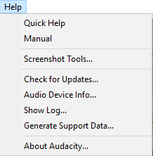
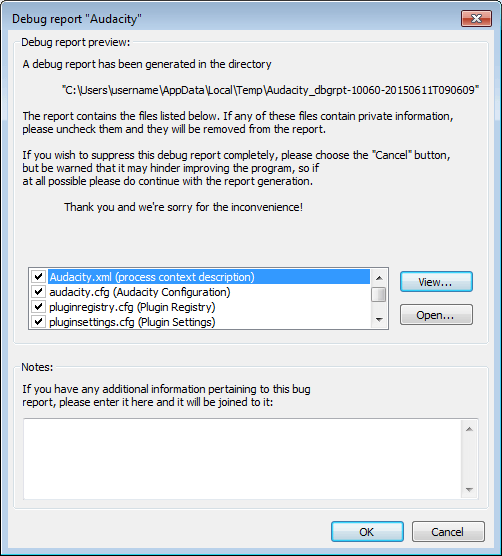
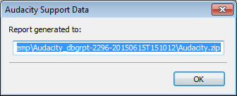

Help Menu
From Audacity Development Manual
The Help Menu
- Click, or hover, on any menu item in the image to read about that command.
- 
Quick Help
The "Getting Started" section of our Manual - quick information, which will be displayed in your browser, on how to play, record and edit audio, and export to an audio file like MP3 or WAV.
Manual
Takes you to the main sections of our Manual, displayed in your browser:
- Tutorials
- Using Audacity - fundamental concepts of working with digital audio
- Reference - all the menus, buttons and controls
- Miscellaneous - including Glossary and Frequently Asked Questions
Screenshot Tools...
Displays the "Screen Capture Frame". This tool lets you capture all or part of your project window to an image file in PNG format. Click the button to pick the location where you want to save the screenshot. Then click the button corresponding to the part of the project window you want to capture. Most of these buttons are self-explanatory.
- Tracks with their waveform or spectrogram (use any of the three buttons)
- Plots of amplitude against frequency for a selected region (use any of the buttons to capture the Frequency Analysis window on its own).
Capture entire window or screen
The buttons in this section enable you to take screenshots of particular parts of the screen.
Pressing any of these buttons will take the screenshot of that entity and place it in the location specified in Save images to.
- captures the window without its title bar.
- captures the window including its title bar.
- captures the window including its title bar, plus a small border region outside the window for context.
- captures the entire computer screen as you see it.
Capture part of a project window
The buttons in this section enable you to take screenshots of particular parts of the Audacity window such as toolbars and selected tracks.
Pressing any of these buttons will take the screenshot of that entity and place it in the location specified in Save images to.
Scale
The buttons in this section can be used to change the scale of the image prior to using one of the screenshot capture buttons above:
- The , and buttons zoom the project window horizontally so that a little more than the length indicated on the button is shown on the Timeline.
- The three buttons zoom all the tracks in the project to a preset height. For example, displays the tracks at minimal height so they only show the Audio Track Dropdown Menu and Collapse/Expand button .
Limitations:
|
Check for Updates...
This takes you to the Download page of the Audacity website where you can see what the latest release version of Audacity is. You can compare the latest release with the version you have now, which will be shown at "?from_ver" in the browser's address bar and which you can also see at About Audacity....
Audio Device Info...
Shows technical information about your detected audio device(s), including their supported sample rates. This item is grayed out if you are playing, recording or paused. Press to save the information as a text file, or to return to the main project window.
Show Log...
Launches the "Audacity Log" window, which can be kept open while Audacity is used normally. The log is largely a debugging aid, having timestamps for each entry. The Audacity version number is always the first entry at the top. Other log entries are added underneath the version number as needed.
- If you use the optional FFmpeg library, the log shows entries for the steps to load the individual FFmpeg components and whether FFmpeg load succeeded.
- If you export an MP3 audio file, the log shows entries for the steps to load the additional LAME library required for MP3 export, and whether LAME load succeeded.
- If you import an audio file, the log shows the imported file's name and extension, which import libraries attempted to import the file and whether the file import succeeded.
- If Audacity crashes and the Automatic Crash Recovery dialog appears on restarting Audacity, or if Audacity encounters a problem when opening an AUP project file, the log may contain additional useful error details.
Buttons
- : Opens a standard file save dialog where you can save the current contents of the log to a text file.
- Clears the current contents of the log, then inserts the Audacity version number at the top followed by a "Log Cleared." message underneath, both with current timestamps.
- Closes the log, preserving its current content for the remainder of the Audacity session.
| On quitting Audacity the log content is discarded. If you need to save the log contents, do so using the button (or generate a Debug Report as below) before quitting. |
Generate Support Data...
Selecting this will generate a Debug report which could be useful in aiding the developers to identify bugs in Audacity or in third-party plug-ins. A ZIP file will be created for easy emailing but the files included in the ZIP are also saved separately.
- 
By default, all items are selected for inclusion in the report. If you wish to exclude any item, select and uncheck it. You can also view or open the selected item before creating the report. The button opens the selected item in an Audacity window. The button opens the selected item in your default application for that document type.
When you click , Audacity will confirm generation of the report and the exact name and folder location of the Debug report ZIP file. You can copy this name and location to the system clipboard. The folder location will be:
- Windows XP: C:\Documents and Settings\<your user name>\Local Settings\Temp\
- Windows Vista or later: C:\Users\<your user name>\AppData\Local\Temp\
- Mac: A subfolder in /var/folders/ - an example subfolder might look something like /var/folders/c0/8p18hd453p3_433cf9_595b40000gn/T/.
- GNU/Linux: /tmp/.
The name of the folder where the separate files are saved specifies the date and time of the report (on Mac and Linux the ZIP's file name also specifies the report's date and time). Below is an example image of the confirmation of generation dialog on Windows:
- 
You can then attach the ZIP file to any bug report or issue that you report. Please submit your report to our feedback address or to the Audacity Forum.
| If the dialog appears of its own accord this will almost certainly be because Audacity has crashed. Audacity will exit after you select OK or Cancel in the dialog and will attempt to recover your project after you restart Audacity. |
About Audacity...
Displays the "About Audacity" dialog, containing tabs for:
- Audacity version information, credits and list of libraries used in Audacity
- Build information for the current build, including file format support, enabled libraries and features and the source code commit number that the build was made from
- GPL v2 License.